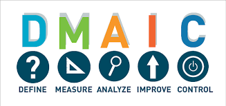

La méthodologie DMAIC est un pilier fondamental du Six Sigma et de l'amélioration continue.
Cette approche structurée en cinq étapes permet de résoudre efficacement les problèmes complexes
et d'optimiser les processus existants.

Vue d'ensemble de la méthodologie DMAIC
Define (Définir)
Définir clairement le problème, les objectifs et le périmètre du projet.
Voice of Customer (VOC) - Identifier les besoins clients
Project Charter - Documenter les objectifs et le périmètre
SIPOC - Cartographier le processus à haut niveau
CTQ Tree - Définir les critères qualité critiques
Measure (Mesurer)
Collecter les données pertinentes et établir une base de référence.
MSA - Valider le système de mesure
Value Stream Mapping - Cartographier le flux de valeur
Capability Analysis - Évaluer la performance actuelle
Data Collection Plan - Structurer la collecte de données
Analyze (Analyser)
Identifier les causes racines des problèmes.
Ishikawa - Analyser les causes et effets
5 Why Analysis - Approfondir l'analyse causale
Pareto Analysis - Prioriser les problèmes
Statistical Analysis - Valider les hypothèses
Improve (Améliorer)
Développer et mettre en œuvre des solutions d'amélioration.
Solution Matrix - Évaluer les solutions potentielles
FMEA - Analyser les modes de défaillance
Pilot Testing - Tester les solutions
Implementation Plan - Planifier le déploiement
Control (Contrôler)
Maintenir les améliorations et standardiser les processus.